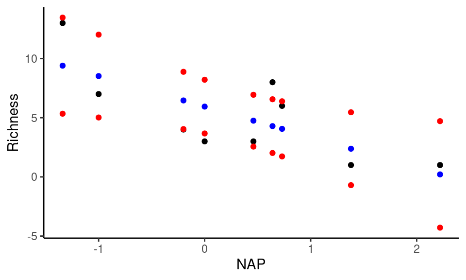
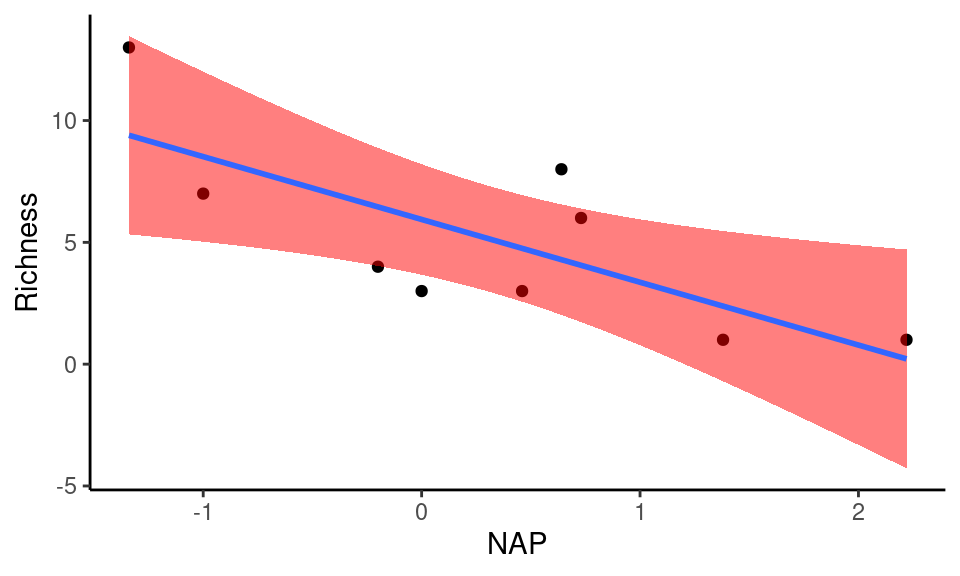
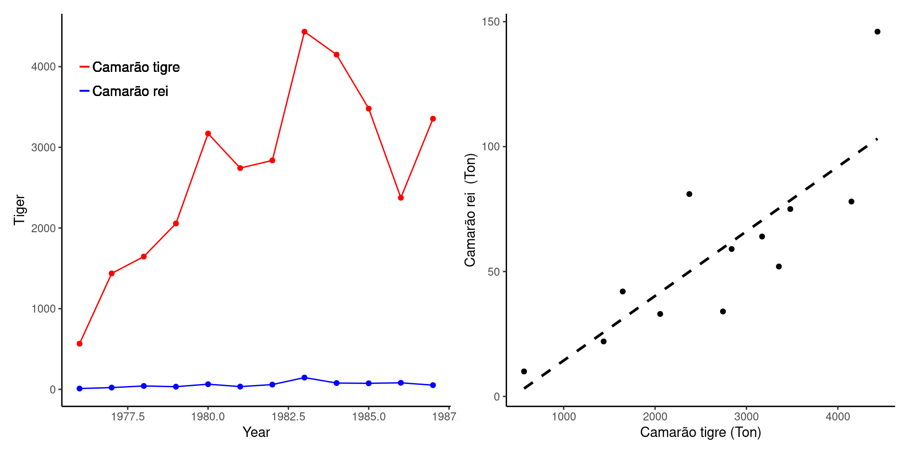

Capítulo 29 As variáveis são aleatórias, não imprevisíveis! - Modelos discretos
Nos capítulos 25 a 28 apresentamos conceitos básicos que regem as leis de probabilidade aplicadas à ocorrência de eventos simples e complexos. No entanto, ao conduzir um experimento, muitas vezes não estamos interessados nos eventos em si, mas em quantias numéricas que expressam a ocorrência destes eventos. Definiremos estas quantias aqui como variáveis aleatórias.

Variáveis aleatórias são funções matemáticas que associam cada evento do espaço amostral a uma quantia numérica. Embora expressem resultados probabilísticos, as variáveis aleatórias como funções matemáticas, têm estruturas previssíveis como média, variância, grau de assimetria, etc. Estas estruturas são as utilizadas para fazermos predições sobre eventos futuros. Neste sentido, as variáveis aleatórias compõem os modelos probabilísticos sobre os quais nos baseamos para fazer predições sobre fenômenos naturais. Estas variáveis são subdivididas em variáveis aleatórias discretas e contínuas, a depender da natureza da informação que está sendo mensurada. As diferências entre dados discretos e contínuos é discutida no capítulo ??. A seguir serão exemplificados diferentes modelos de variáveis aleatórias associados a diferentes tipos de experimentos aleatórios.
29.1 Experimento 1: Sucessos e fracassos
Rhamdioglanis transfasciatus é um peixe endêmico de riachos costeiros de Mata Atlântica do sudeste do Brasil, particularmente abundante em pequenos riachos, rasos, com boa cobertura vegetal e de fundo predregoso. A captura é feita buscando os indivíduos ocultos sob rochas e troncos, que são o micro-habitats que a espécie ocupa. Geralmente esta busca é feita percorrendo um trecho de algumas dezenas de metros de extensão em um dado riacho.

Suponha que a probabilidade de ocorrência da espécie em riachos da região seja de \(P(O) = 0.4\). Suponha também que não existam falsos positivos ou falsos negativos. Isto é, se a espécie estiver presente no trecho ela certamente será capturada e, se não estiver, não há a possibilidade de falso registro. Neste caso, se fizermos uma busca, é esperado que a captura seja feita em 40% dos riachos selecionados.
Ao selecionar um dado riacho, os resultados possíveis são:
\[\Omega = \{(ocorre), (nao-ocorre)\}\]
Em que \(P(ocorre) = 0,4\) e \(P(não-ocorre) = 1-0,4 = 0,6\)
Vamos denominar de sucesso a escolha de um riacho em a espécie esteja presente e de fracasso a escolha de um riacho que em esteja ausente. Se selecionarmos um único riacho, a probabilidade de captura da espécie poderia ser modelada por um variável aleatória denominada de Modelo de Bernoulli. Aqui, vamos generalizar este modelo e supor que estejamos interessados em selecionar aleatoriamente \(n = 4\) riachos.
Este experimento consiste portanto de 4 etapas, isto é, a amostragem do \(1^o\), \(2^o\), \(3^o\) e \(4^o\) riacho, verificando em cada um a ocorrẽncia da espécie. Se representarmos por \(O\) o evento de ocorrência e por \(\overline{O}\) o evento não-ocorrência, os possíveis resultados do experimento seriam:
A tabela acima apresenta os 16 eventos possíveis deste experimento, em que cada riacho pode ou não conter a espécie. A pirmeira linha por exemplo, descreve a situação em que a espécie não-ocorre em nenhum riacho, enquanto a última descreve a situação em que a espécie ocorre em todos os riachos.
Estamos interessados aqui em uma representação numérica destes eventos (nossa variável aleatória \(Y\)) que descreve no número de ocorrências após a seleção de \(4\) riachos. A última coluna da tabela nos mostra todos os valores possíveis para \(Y\). Veja que, não encontrar a espécie em nenhum riacho equivale a dizer que \(Y = 0\), enquanto encontrá-la em todos os riachos resulta em \(Y = 0\). Para outros resultados temos mais de uma possibilidade. Por exemplo, \(Y = 2\) ocorre em 6 situações diferentes, dependendo das combinações entre ocorrência e não-ocorrência para cada riacho.
Assim, ao utilizar a variável aleatória \(Y\) nosso novo espaço amostral consiste de 5 possibilidades numéricas distintas e mutuamente exclusivas, em que \(Y\) pode ser \(0\), \(1\), \(2\), \(3\), ou \(4\). Escrevemos que nosso espaço amostral é:
\[\Omega = \left\{ y \in \mathbb{N}: 0 \le y \le 4 \right\}\]
A distribuição de probabilidade de \(Y\)
Qual a probabilidade de ocorrência de cada um dos 16 eventos possíveis? Se assumirmos que os resultados obtidos em cada riacho são independentes, a probabilidade do evento descrito na primeira linha por exemplo seria:
\(P(1^a linha) = P(Y = 0) = P(\overline{O}) \times P(\overline{O}) \times P(\overline{O}) \times P(\overline{O})\)
\(P(Y = 0) = 0.6 \times 0.6 \times 0.6 \times 0.6 = 0.1296\)
No caso da segunda linha temos:
\(P(2^a linha) = P(\overline{O}) \times P(\overline{O}) \times P(\overline{O}) \times P(O)\)
\(P(2^a linha) = 0.6 \times 0.6 \times 0.6 \times 0.4 = 0.0864\)
Esta linha equivale a \(Y = 1\). No entanto, veja que existem outras 3 linhas em que \(Y = 1\). Deste modo:
\(P(Y = 1) = 4 \times (0.6 \times 0.6 \times 0.6 \times 0.4) = 0.3456\)
Seguindo o mesmo raciocínio para os demais valores de \(Y\) temos:
\(P(Y = 2) = 6 \times (0.6 \times 0.6 \times 0.4 \times 0.4) = 0.3456\)
\(P(Y = 3) = 4 \times (0.6 \times 0.4 \times 0.4 \times 0.4) = 0.1536\)
\(P(Y = 4) = 1 \times (0.4 \times 0.4 \times 0.4 \times 0.4) = 0.0256\)
A soma de \(P(Y = 0) + \cdots + P(Y = 4) = 1\), de modo que temos \(0 \le Y \le 4\) como todos os valores possíveis desta variável aleatória.
Uma expressão geral para \(P(Y = y)\)
Vamos definir \(P(Y = y)\) como a probabilidade da variável aleatória \(Y\) (MAIÚSCULO) assumir um valor particular \(y\) (minúsculo). Mais a frente, para simplificar as notações, iremos utilizar simplesmente \(p_{Y}(y)\) ou \(p(y)\) no lugar de \(P(Y = y)\). Vamos definir também \(P(O) = p\), \(P(\overline{O}) = 1 - p\) e \(n\) como o número de tentativas do experimentos (= número de riachos selecionados).
Utilizando as regras de probabilidade para eventos independentes e regras de contagem, podemos encontrar a expressão que generaliza o cálculo de cada uma das probabilidades acima por:
\[P(Y = y|n,p) = \left (\begin{array}{c} n \\ y \end{array}\right) \times p^y \times (1-p)^{(n-y)}\]
Este modelo para é conhecido como Modelo Binomial, em que \(n\) e \(p\) são denominados de parâmetros. A expressão é conhecida como a função de massa de probabilidade de \(Y\) ou simplesmente como distribuição de probabilidade de \(Y\) para o modelo binomial.
Entendendo a expressão do modelo binomial
A porção \(p^y \times (1-p)^{(n-y)}\) indica que o sucesso ocorreu \(y\), cada uma com probabilidade \(p\), enquanto o fracasso ocorreu \((n - y)\) vezes, cada uma com probabilidade \((1-p)\).
A expressão \(\left (\begin{array}{c} n \\ y \end{array}\right)\) vem da teoria combinatória e nos diz quantas vezes podemos obter \(y\) ocorrências dentro de \(n\) possibilidades. Lembre-se que:
\[\left (\begin{array}{c} n \\ y \end{array}\right) = \frac{n!}{(n-y)! \times y!}\]
\(P(Y = y|n,p)\) é lido como a probabilidade de \(Y\) assumir o valor \(y\) dados os valores dos parâmetros \(n\) e \(p\), ou simplesmente, a probabilidade de obtermos \(y\) sucessos em \(n\) tentativas.
29.1.0.1 Exemplo de cálculo
Vamos exemplificar o cálculo para \(Y = 3\), lembrando que em nosso exemplo \(n = 4\) e \(p = 0,4\).
\(P(Y = 3|4,0.4) = \left (\begin{array}{c} 4 \\ 3 \end{array}\right) \times 0.4^3 \times (1-0.4)^{(4-3)}\)
\(P(Y = 3|4,0.4) = \frac{4!}{(4-3)!3!} \times 0.4^3 \times (0.6)^{1}\)
\(P(Y = 3|4,0.4) = \frac{24}{6} \times 0.064 \times (0.6) = 0.1536\)
o que é condizente com o resultado obtido anteriormente.
Se fizermos os cálculos para todos os valores de \(Y\) e os expressarmos em um gráfico de barras (Capítulo ??) veremos a figura abaixo:
Vemos que as probabilidades de selecionarmos 1 ou 2 riachos contendo a espécie são maiores que as probabilidades de que nenhum ou de que todos os riachos contenham a espécie.
Função de distribuição acumulada
Obtida \(p_Y\) para cada valor particular, podemos obter as probabilidades acumuladas para \(Y\). Vamos denotar esta função de \(F(y)\), que nos fornece a probabilidade de obtermos valores de \(Y\) menores ou iguais a um limite particular \(y\). Deste modo temos que:
\[F(y) = P(Y \le y)\]
Se comparamos \(F(y)\) e \(p(y)\) graficamente teremos:

A barra laranja em 1 por exemplo, é o somatório das duas primeiras barras em azul da distribuição de \(p(y)\). Veja que \(F(Y)\) necessariamente termina em \(1\) expressando a soma de todos os valores possíveis de \(p(y)\).
Estruturas previsíveis para um experimento aleatório
Ainda que não saibamos o resultado final de um experimento em particular, o modelo binomial que acabamos de construir nos diz que, ao repetí-lo um grande número de vezes, é mais provável encontrarmos a espécie em 1 ou 2 riachos que em nenhum ou nos 4 riachos. Consequentemente, o modelo nos permite fazer predições sobre o comportamento futuro de um experimento deste tipo. Assim, mesmo antes da execução do experimento, sabemos que será o comportamento predito no que diz respeito aos seus possíveis resultados. Esta capacidade de predição é fundamental se queremos comparar os resultados de experimentos com diferentes modelos teóricos, como veremos no capítulos 33 e 34.
Ao definirmos um modelo para nossa variável aleatória, uma forma simples de descrevê-la são por suas medidas de tendência central e de variabilidade.
O valor esperado (ou esperança) de uma variável aleatória é dado por:
\[E(Y) = \mu = \sum_i^n y_i \times p(y_i)\]
O valor esperado de \(Y\) pode ser interpretado como o centro de massa da variável aleatória, ou simplesmente como a média de \(Y\). Note que utilizamos o símbolo \(\mu\) e não \(\overline{Y}\), pois estamos nos referindo ao comportamento da média da variável aleatória na população estatística de experimentos deste tipo, e não à média de um conjunto de experimentos particulares (Capítulo ??).
O valor esperado nos dá uma medida de centralidade para a distribuição de \(Y\). Uma outra medida importante é a variância de \(Y\), que nos informa sobre o grau de disperção de \(Y\) ao redor da média:
\[VAR(Y) = \sigma^2 = E(Y^2) - (E(Y))^2\]
Poderíamos utilizar as expressões acima para encontrar o valor esperado e a variância de \(Y\) no modelo binomial. No entanto, para este modelo bem como para outros que veremos a seguir, existem expressões particulares em que:
\[E(Y) = n \times p\]
e
\[VAR(Y) = n \times p \times (1-p)\]
Em nosso exemplo, temos \(E(Y) = 4 \times 0.4 = 0.16\) e \(VAR(Y) = 4 \times 0,4 \times 0.6 = 0.96\).
Alterando os parâmetros do modelo
Em nosso exemplo, esperamos encontrar a espécie na maior parte das vezes em 1 ou 2. De fato, a esperança de \(Y\) será \(E(Y) = 1.6\). O que aconteceria para outros valores de \(n\) ou de \(p\). Veja as figuras abaixo:

Na medida em que \(p\) é baixo, a distribuição de probabilidade é assimétrica para a esquerda, denotando que é mais provável a ocorrência de um número baixo de sucessos. Para \(p = 0.5\) a distribuição de probabilidade é simétrica ao redor do valor esperado, e as proporções de sucessos e fracassos são idênticas. Finalmente, para valores elevados de \(p\) a distribuição é assimétrica para a direita e a probabilidade de obtermos um número elevado de sucessos aumenta.
29.2 Experimento 2: O custo de 1 sucesso
Suponha agora que ao chegar em uma determinada área, temos interesse em encontrar um único riacho que contenha a espécie. O experimento consistirá da amostragem de diferentes riachos até que encontremos a espécie pela primeira vez. Se soubermos que a probabilidade de ocorrência da espécie nos riachos da região é de \(p = 0,4\) podemos nos questionar:
Quantos riachos esperamos amostrar até encontrar a espécie?
Neste caso temos um experimento sequencial que só irá terminar quando encontrarmos a espécie. Em cada riacho amostrado, a espécie pode estar presente com probabilidade \(p\), ou não estar presente com probabilidade \(1-p\). Cada nova observação é independente da observação feita anteriormente, isto é, não encontrar a espécie em um riacho não nos ajuda a saber sobre sua ocorrência no próximo.
A variável aleatória \(Y\) é definida aqui como o número de tentativas necessárias para obtenção de um único sucesso, e o experimento segue o que conhecemos por Modelo Geométrico.
Se dermos sorte, poderíamos encontrar a espécie logo na primeira tentativa com probabilidade:
\(P(Y = 1) = p\)
Não encontrarmos a espécie no primero riacho, mas a encontrarmos no segundo pode ocorrer com probabilidade:
\(P(Y = 1) = (1-p) \times p\)
Generalizando, a distribuição de probabilidade para o modelo geométrico é:
\[P(Y = y|p) = (1-p)^{y-1} \times p\] ?Esta expressão reflete o fato de que o primeiro 1 sucesso que irá acontecer com probabilidade \(p\) deve necessariamente ser precedido de \(y-1\) fracassos, cada um com probabilidade \((1-p)\).
A distribuição de probabilidade e as funções de distribuição acumulada para o modelo geométrico têm os seguintes formatos:
Quando \(p = 0.05\), por exemplo, existe uma probabilidade de cerca de 0.45 que seja necesária a busca em 10 riachos até que a espécie seja observada. Para valores altos de \(p\) por outro lado, a probabilidade de encontrar a espécie logo nos primeiros riachos é alta (ex. para \(p = 0.4\), \(F(3) = 0.8704\)).
Nas figuras, são apresentadas probabilidades até \(Y = 20\), ainda que a variável aleatória no modelo geométrico não tenha limite superior. Consequentemente, o espaço amostral no modelo geométrico pode ser definido por:
\[\Omega = \left\{ y \in \mathbb{N}: y \ge 1 \right\}\]
Assim como no modelo binomial, podemos definir os valores para a esperança e variância do modelo geométrico por:
\[E(Y) = \frac{1}{p}\]
\[VAR(Y) = \frac{1-p}{p^2}\]
29.3 Experimento 3: Uma sequência de sucessos
Em muitos estudos, devemos selecionar um número pré-definido de ambientes com uma determinada característica. Suponha portanto uma modificação do experimento anterior. Desejamos agora encontrar a espécie em exatamente \(r = 3\) riachos. Novamente, vamos supor que a probabilidade de ocorrência da espécie seja \(p = 0.05\). Uma pergunta importante é:
Quantos riachos esperamos amostrar até que encontremos a espécies em exatamente \(r = 3\) riachos?
Novamente, temos um experimento sequencial. Porém iremos selecionar continuamente um novo riacho até encontrarmos \(r\) deles contendo a espécie. Em cada riacho, a espécie pode ou não estar presente (com probabilidades \(p\) e \(1-p\) respsctivamente) e cada nova observação é independente das anteriores. Vamos assumir novamente \(p = 0.4\)
Se dermos sorte, poderíamos encontrar a espécie logo nos primeiros três riachos, de modo que a sequencia observada seria:
\(presente\), \(presente\), \(presente\); com probabilidade
\(p \times p \times p = 0,4 \times 0,4 \times 0,4 = 0,4^3 = 0,064\)
Outra sequencia possível seria não encontrar a espécie no primeiro porém encontrá-la nos três riachos seguintes. Neste caso:
\(ausente\), \(presente\), \(presente\), \(presente\); com probabilidade
\((1 - p) \times p \times p \times p = 0,6 \times 0,4 \times 0,4 \times 0,4 = 0,6 \times 0,4^3 = 0,0384\)
O parâmetro \(r\) refere-se ao número de sucessos e não ao número de tentativas para obtê-los. Consequentemente, não existe um número pré-definido de observações como no modelo binomial. O número mínimo de tentativas é de \(r\) observações, na medida em que obtenhamos logo nas primeiras tentativas. Entratento o limite superior não existe, uma vez existe, ainda que baixa, uma probabilidade de obtermos sucessivos fracassos eternamente. Neste caso, nossa sequencia de observações se extenderia indefinidamente como:
\(ausente\), \(ausente\), \(\cdots\), \(ausente\), \(\cdots\), com probabilidades
\((1-p) \times (1-p) \times \cdots \times (1-p) \times \cdots\)
O modelo descrito aqui é conhecido como Modelo Binomial Negativo, em que a distribuição de probabilidade é dada por:
\[P(Y = y|r,p) = \left (\begin{array}{c} y - 1 \\ r - 1 \end{array}\right) \times p^{r} \times (1-p)^{(y-r)}\]
As funções de distribuição de probabilidade e a função acumulada tem os seguintes formatos:

No modelo binomial negativo, a esperança matemática e a variância são definidas por:
\[E(Y) = \frac{r}{p}\]
\[VAR(Y) = \frac{r \times (1-p)}{p^2}\]
29.4 Experimento 4: Quantas marcas na amostra!
Encontrado um riacho em que a espécie ocorre, desejamos estudar o padrão de abundância de sua população. Suponha que neste riacho existam \(N\) indivíduos da população alvo. Esta população consiste de \(m\) indivíduos marcados e \(N-m\) não-marcados. A marcação foi feita anteriormente para diferenciarmos os dois grupos. O experimento consiste em amostrar \(n\) indivíduos desta população e verificar quantos (\(y\)) apresentam a marcação.
Este experimento é comumente realizado para obtermos dados sobre manejo populacional, e descreve uma aplicação típica do Modelo Hipergeométrico em ecologia de populações. No modelo hipergeométrico a variável aleatória \(Y\) representa o número de indivíduos com determinada característica na segunda amostra e a variável tem a seguinte distribuição de probabilidade:
\[P(Y=y|N,m,n) = \frac{\left (\begin{array}{c} m \\ y \end{array}\right) \times \left (\begin{array}{c} N-m \\ n-y \end{array}\right)}{\left (\begin{array}{c} N \\ n \end{array}\right)}\]
Os parâmetros da distribuição hipergeométrica são:
N: tamanho total de elementos;
m: número total de elementos com a característica de interesse, e;
n: número de elementos na amostra.
Vejam que a variável aleatória \(Y\) tem \(0\) como valor mínimo, quando nenhum dos indivíduos na amostra estiver marcado. O valor máximo será o maior número entre \(m\) e \(n\). Vejamos o formato da distribuição hipergeométrica para um tamanho \(N = 30\) e diferentes valores de \(m\) e \(n\).
No modelo hipergeométrico podemos definir o valor esperado e a variância por:
\[E(Y) = \frac{n m}{N}\]
\[VAR(Y) = \frac{n m}{N}(\frac{(n-1)(m-1)}{N-1}+1-\frac{n m}{N})\]
29.5 Experimento 5: Contagem por unidade de área, tempo, …..
Neste último experimento, o riacho foi subdividido em 30 unidades de \(1m^2\). Foram amostrados todos os indivíduos presentes nos trechos. Se o número de indivíduos em um determinado trecho for independente do número de indivíduos nos demais trechos, a contagem de organísmos por \(m^2\) será uma variável aleatória descrita por um Modelo de Poisson. Neste modelo, temos um único parâmetro denominado lambda (\(\lambda\)) e a distribuição de probabilidade será descrita por:
\[P(Y = y|\lambda) = \frac{e^{-\lambda} \lambda^y}{y!}\]
O formato da distribuição é assimétrico para valores baixos de \(\lambda\), tornado-se simétrico ao redor da média à medida que \(\lambda\) aumenta.

Este é um modelo particular em que o valor esperado é igual à variância, ambos dados por:
\[E(Y) = VAR(Y) = \lambda\]
Embora tenhamos exemplificado o modelo para unidade de área, o modelo de Poisson pode ser utilizado para expressar dados de contagem para qualquer tipo de unidade (ex. indivíduos por dia), desde que a contagem em uma unidade seja independente da contagem obtida nas demais unidades.